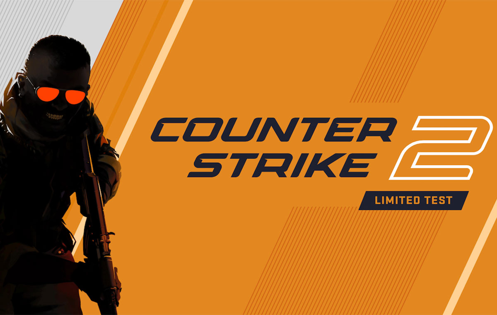
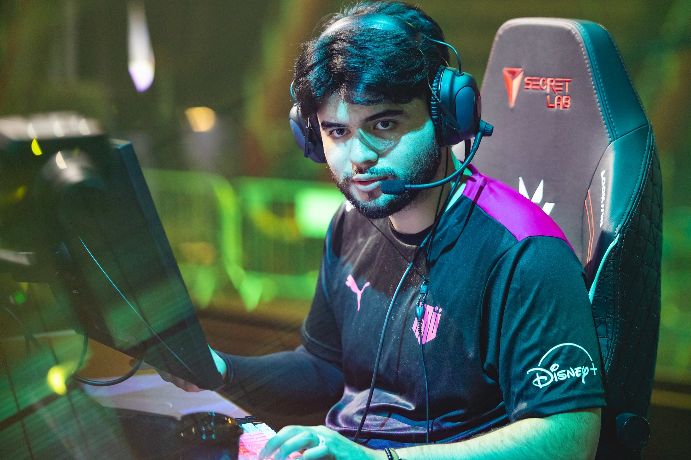
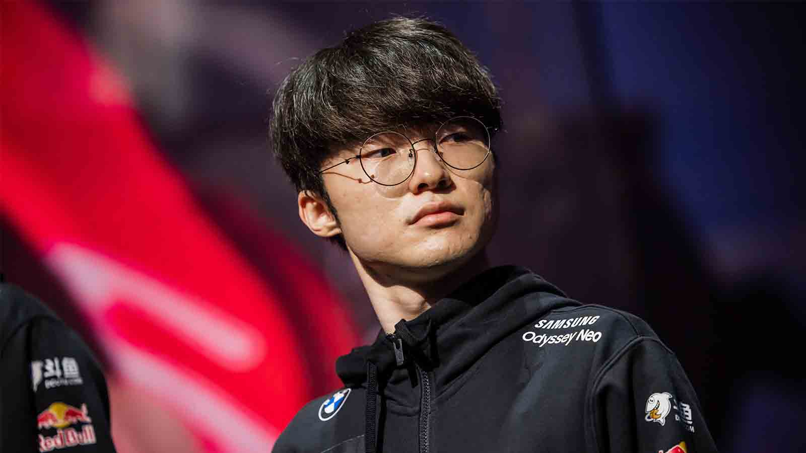
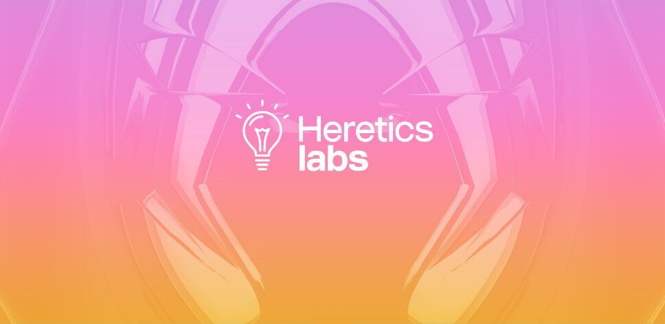
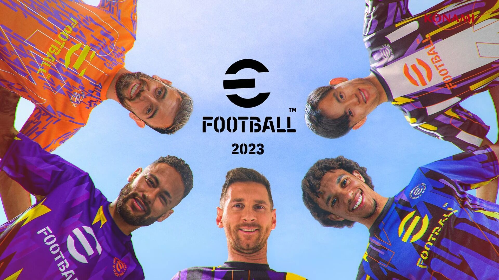

CS:GO Asia Championships
Seis de los mejores equipos del mundo y dos de origen chino se enfrentarán en este gran campeonato que
tendrá lugar durante el próximo mes de noviembre. CS:GO está dando sus últimos coletazos a nivel competitivo
ya que con Counter-Strike 2 a la vuelta de la esquina parece que el 2023 será el último año en el que veamos
grandes competiciones en el veterano shooter de Valve. Este año el torneo se celebrará en la famosa ciudad
china de Shanghái del 8 al 12 de noviembre, repartiendola friolera de 500.000 dólares en premios entre los 8
equipos que participarán en esta edición, seis de mejores del mundo y dos de Asia

El jugador Daveeysde falleció
Su club ha emitido un comunicado en el que confirma la desgraciada muerte de su jugador.
"Es con profunda tristeza que tenemos que comunicarles que, tras sufrir una descompensación el domingo,
falleció Daveeys", reza el comunicado de KRÜ. "No hay forma de suavizar esto, nos tomó a todos por sorpresa.
Daveeys, Santi, era un player espectacular y un compañero de primera. Con su característica humildad trabajadora,
se sentía orgulloso de poder inspirar y representar a su país y región en lo más alto del VALORANT mundial.
Fue su sueño, y lo vio cumplido. Todos en KRÜ acompañamos en este difícil momento a su familia y amigos, y
pedimos a toda la comunidad que los apoyen con su fuerza y cariño".

Faker se tomará un descanso
T1 ha anunciado que su estrella no participará en los próximos partidos para recuperarse totalmente de su
lesión, con Poby ocupando su lugar de forma temporal.Tras la confesión del mid laner su equipo, T1,
ha salido a la palestra para anunciar que Faker se tomará un descanso a nivel competitivo para recuperarse al
100 % de esta lesión, teniendo un tiempo extra de reposo y pudiendo centrarse en su tratamiento para estar de
vuelta en cuanto esté recuperado.

Heretics Labs segunda edicion
a aceleradora del mundo de los esports que comenzará con una nueva convocatoria en septiembre en busca de tres
proyectos cuyas propuestas de valor conformen ideas que puedan revolucionar el sector de los esports.
Heretics Labs busca proyectos emprendedores en fase semilla a los que poder apoyar junto a fondos de inversión Como
Sevenzonic Ventures,Kfund y All Iron Ventures que aportarán sus conocimientos a través de mentorías estratégicas,
asesorando a estos proyectos, así como premiándolos con 100.000 euros en Media 4 Equity así como recursos internos
para lanzar su idea al mercado.

Gamergy 2023 volvera
Hace unas horas que GGTech ha anunciado la nueva edición del evento, Gamergy 2023, que volverá al recinto ferial
IFEMA Madrid del 15 ala 17 de diciembre repitiendo fórmula con triple formato (presencial, online y virtual) y que
ya ha puesto a la venta las primeras entradas "Early Bird 1", abonos de 3 días de venta anticipada con descuentos
exclusivos hasta agotar existencias.

campeones del eFootball 2023
El torneo se dividió en dos categorías, por un lado teníamos el campeonato de eFootball para dispositivos móviles
y por el otro teníamos la categoría de la competición en consolas. En la primera El brasileño El_Mysterio, natural
de Brasil, se hizo con el triunfo mientras que en consolas fue el japonés UDI el que se llevó la victoria. Ambos
jugadores se embolsaron 10.000 dólares del primer premio. "Me siento súper emocionado, no puedo creerlo. Estaba
pensando en tantas cosas diferentes en ese momento. En la tanda de penaltis, tuve que pensar dónde tirar, dónde
parar, por suerte me funcionó bien, ¡y ahora soy el campeón!", comentó El_Mysterio tras su victoria.